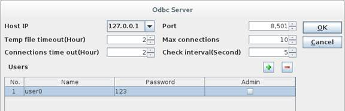

Starting the GUI console
In esProc¡¯s [installation root directory]\esProc\bin, double click the esprocs.exe file (Under Linux, execute ServerConsole.sh) to pop up the Odbc Server window:
Select Odbc Server and click Config to open the ODBC Server window:
On the above window, you can configure port number, temporary file timeout, maximum connection number, connection timeout and check interval. The middle part of the window is user management, where you can configure the authorized users and their passwords. Below is an example:

Click OK and esProc will automatically configure the OdbcServer.xml file according to the configured information under [installation root directory]\esProc config. Then click Start to launch the esProc ODBC service. To stop the service, just click Stop.
Starting the non-GUI console
Use the non-GUI console under Linux, here is how to start it: execute the command ./ServerConsole.sh -o in the esProc\bin directory under the installation root directory to start the ODBC service. After the configuration for ODBC service is finished, we can establish an ODBC connection through esProc-ODBC.
Note: esProc ODBC service can be only enabled on the server side under Linux.